Global settings overview¶
The Global settings serves as a centralized hub for managing default configurations across various screens and tabs within the application. These settings allow administrators to define system-wide preferences, ensuring consistency and streamlining the user experience. By configuring options such as default values, display preferences, and behavior settings, organizations can establish values that will automatically apply across relevant fields— reducing the need for repetitive data entry and promoting standardized configuration.
Note
Changes made in the Global settings screen are applied system-wide and affect all users unless overridden by specific user or role-based configurations. When a value is configured as a default, it is automatically populated on any screen containing that field
Key default configurations¶
-
File Path default: If a default file path is set, any file-related actions will save the files to the specified location automatically, ensuring consistent storage and easy retrieval.
-
Field-Specific defaults: When default values are configured for specific fields— such as Standard Pricing or Unit of Measurement— these values will pre-fill on applicable screens, saving time and improving data accuracy.
-
Format defaults: Setting default formats for items such as invoices or dates ensures that users see information presented in a uniform manner across the application.
-
Color Scheme default: Setting a color scheme as a default allows users to customize the application’s appearance to fit branding needs or personal preferences. Once a color scheme is selected in the Global Settings module, it is applied consistently across all screens, menus, and toolbars— providing a cohesive visual experience. This can be especially useful for distinguishing different environments (e.g. Test, Development, Production) or for enhancing accessibility with high-contrast options.
Procedure to configure¶
This section outlines the steps to configure the Global settings in nGenue.
Prerequisites¶
- You have the necessary administrative permissions to access and modify the Global settings screen.
- A thorough understanding of the organization's requirements for screen and tab configurations is essential.
- Any dependent configurations, such as roles or permissions, are already set up.
Procedure¶
Step 1: Access the Global settings screen¶
- Log in to the nGenue application with your credentials.
- Click the Search icon and enter global settings in the search bar.
- Double-click Global settings to open the respective screen.
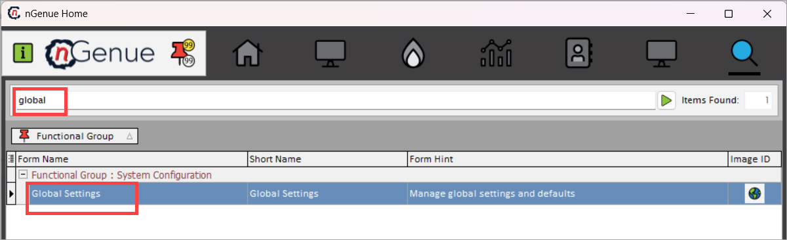
{kind=link}
Step 2: Modify or configure settings¶
-
On the Global settings screen, locate the specific category or section you want to configure (e.g., default values, display preferences, color schemes, deal settings, or behavior settings).
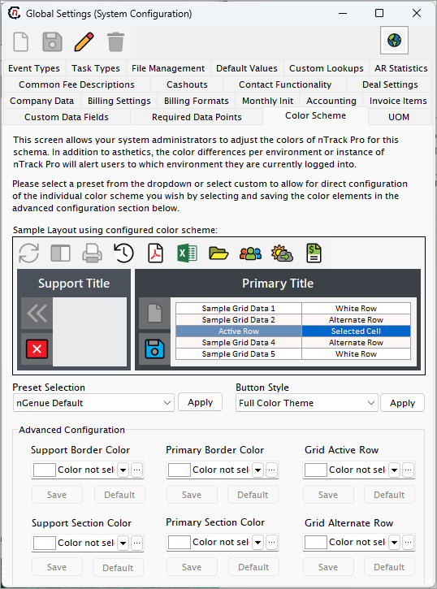
-
Click on the appropriate tab to access its settings. The tabs are as follows:
-
Event types
This tab allows you to define and manage the various event types used across the application. Event types help categorize and track system activities for better monitoring and reporting.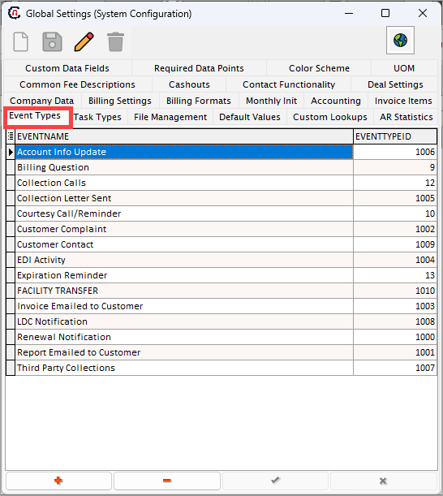
-
Task types
Use this tab to configure task categories, ensuring that all tasks are properly classified and aligned with your operational workflows.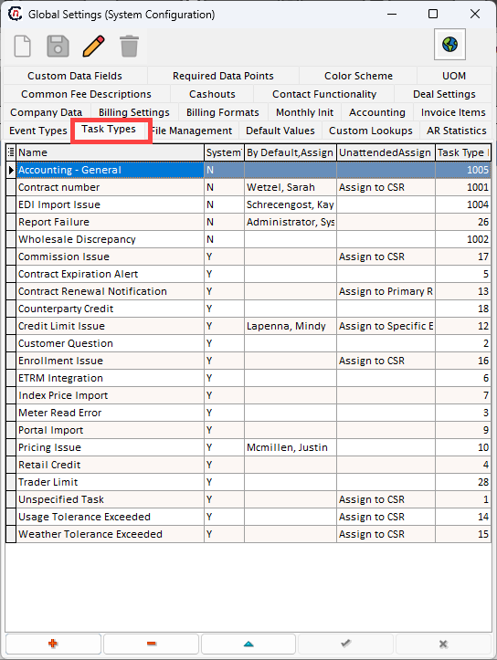
-
File management
This tab lets you allows users to define default paths for document storage and related assets within nGenue. By setting up these paths, exported files are automatically saved in specified locations, streamlining file access and management.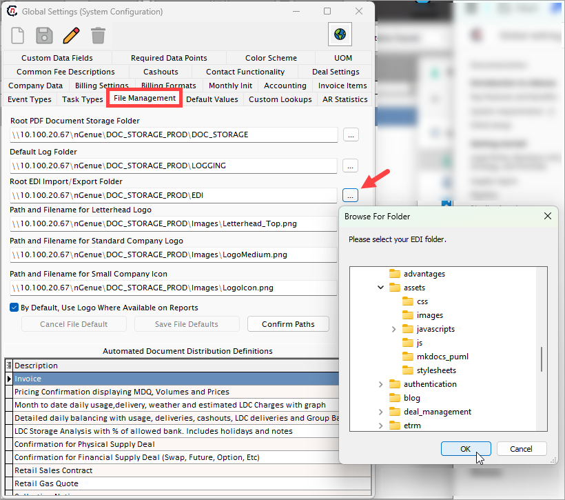
Available default paths
-
Default values
Configure default values that populate throughout the nGenue application. For example, if the default volume unit is set to MMBTU, this unit will auto-populate in relevant fields, such as when creating a new deal.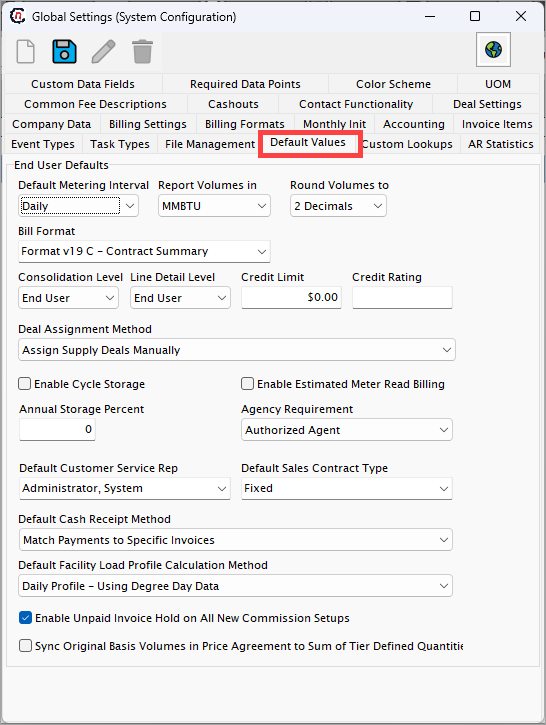
-
Custom lookups
This tab allows you to set up custom lookup fields for dropdowns or selection lists, enabling the application to cater to specific organizational needs. -
AR statistics
Manage and view accounts receivable statistics. This tab helps track and report key metrics for financial operations.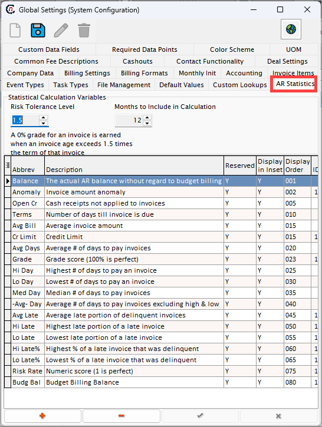
-
Custom data fields
Use this tab to create and manage custom data fields that extend the application’s functionality, ensuring that unique data requirements are met. -
Required data points
This tab defines mandatory fields across the application. Enforcing required data points ensures data completeness and compliance.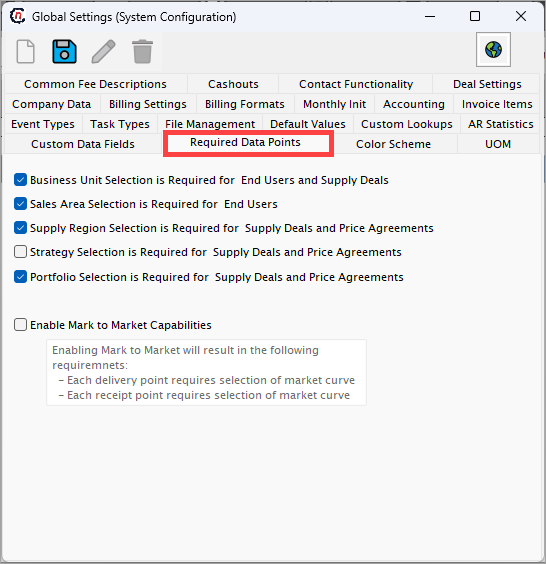
-
Color scheme
Manage nGenue’s interface color theme or grid settings. For example, selecting a Green theme updates the user interface with a consistent green color scheme.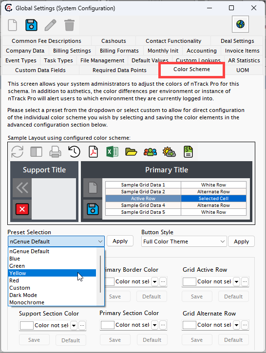
-
UOM (Unit of measurement)
Configure default units of measurement for quantities, such as MMBTU, THERM, or MCF. These units will be applied across the application for consistency.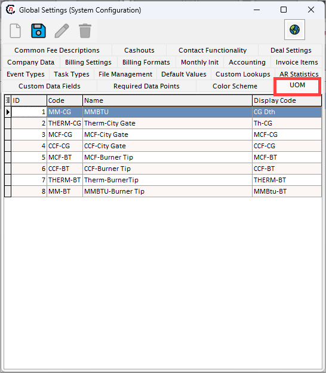
-
Common fees descriptions
Define standard fee descriptions for consistent terminology when adding or applying fees in various processes.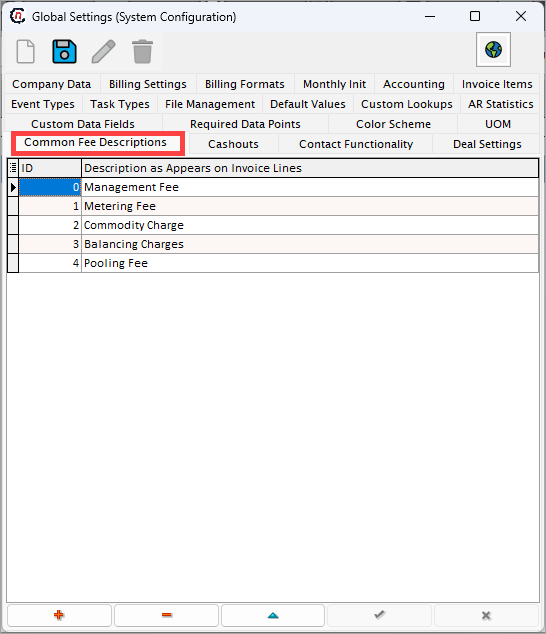
-
Cashouts
This tab helps configure cashout rules and parameters, ensuring proper handling and reporting of cashouts.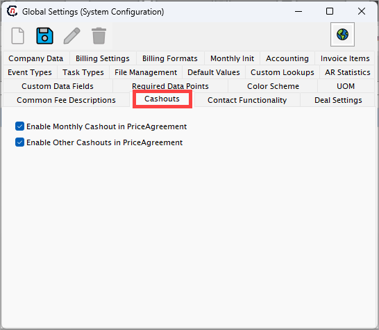
-
Contact functionality
Manage the contact settings for the application, such as default contact templates or rules for contact association.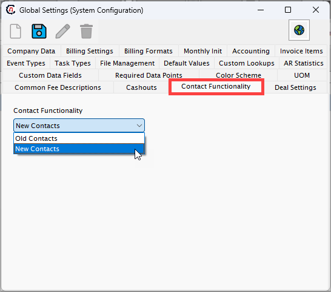
-
Deal settings
Configure deal-specific settings. For example, if Default child deals allocation for buys or sells is enabled, this option will be preselected when creating a new deal.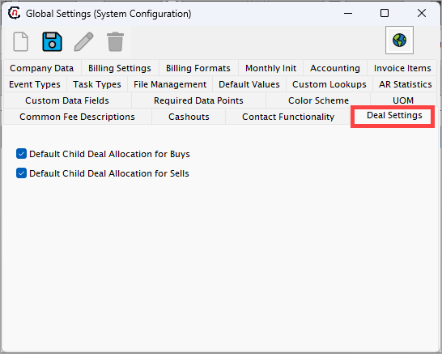
-
Company data
Provide and manage company information, including company name, address, main phone number, billing inquiries contact details, website URL, and other related data.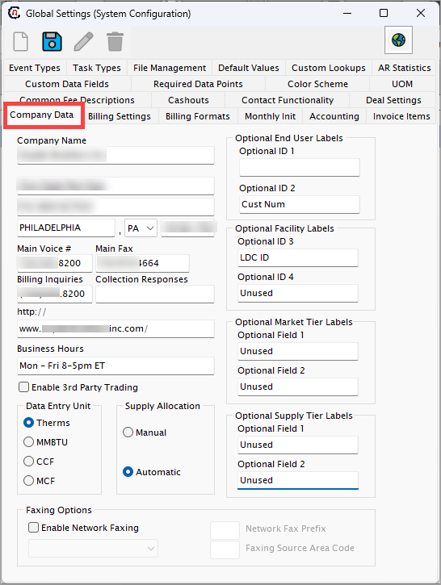
-
Billing settings
This tab is used to manage default billing configurations, such as billing cycles, payment terms, or billing options.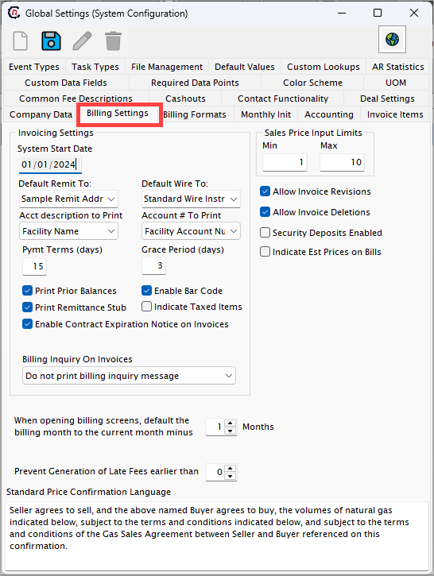
-
Billing formats
Set the default invoice format for end users. All generated invoices will follow the format specified in this tab unless overridden.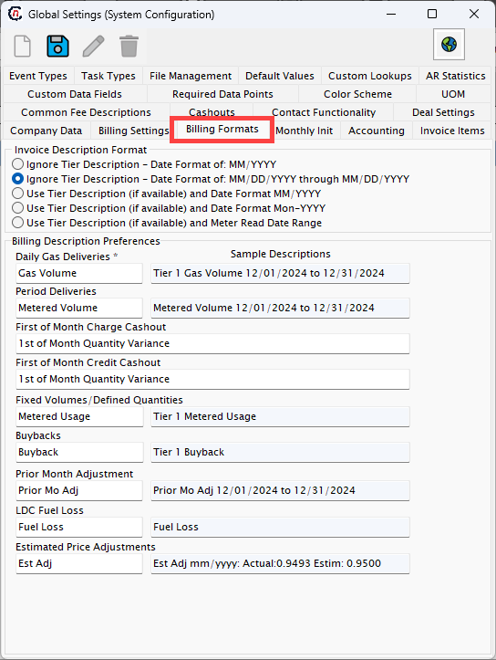
-
Monthly Init
Configure settings related to monthly initialization processes, ensuring the system is prepared for new operational cycles.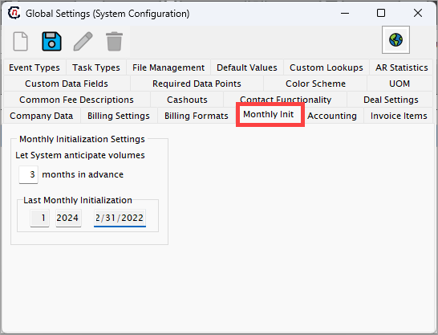
-
Accounting
Manage accounting-related settings such as account codes, financial periods, or other key parameters critical for financial management. -
Invoice items
Define and manage items or services that appear on invoices. This includes descriptions, default prices, and categorization.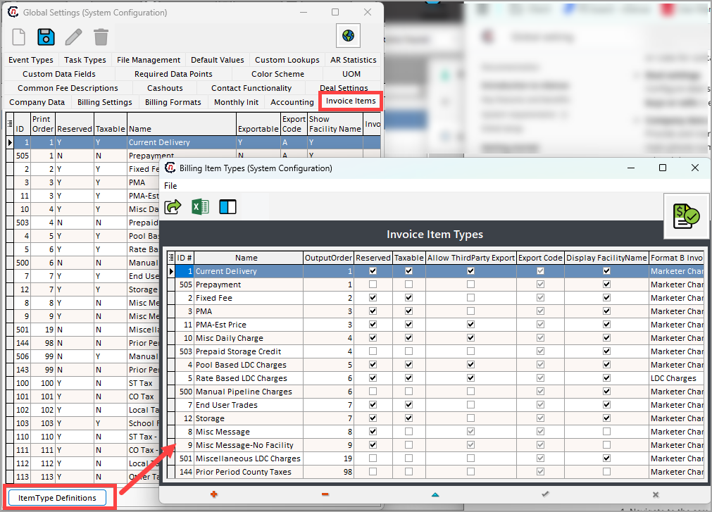
-
{kind=link}
{kind=link}
{kind=link}
{kind=link}
{kind=link}
{kind=link}
{kind=link}
{kind=link}
{kind=link}
{kind=link}
{kind=link}
{kind=link}
{kind=link}
{kind=link}
{kind=link}
{kind=link}
{kind=link}
{kind=link}
Step 3: Save and apply changes¶
- After updating the required settings, click the Save button to apply the changes.
- A confirmation message will appear to indicate that the settings were successfully updated.
Step 4: Validate the configuration¶
- Navigate to the screens or tabs impacted by the updated global settings to confirm that the changes are reflected as expected.
- If adjustments are needed, return to the Global settings screen and modify the configuration accordingly.